Производство
SmartWall – это инновационная компания по производству всех типов раздвижных перегородок «под ключ» для коммерческих и частных помещений всех типов.
Мы производим и устанавливаем различные виды трансформируемых перегородок: глухие с дверями и без дверей, стеклянные, комбинированные, стеклянные с усиленной звукоизоляцией (до 42 дБ), с усиленной пожарной безопасностью (класс КМО 45).
С различными типами стекла (закаленное, триплекс), с различными отделками стекла (оклейкой, пескоструйной обработкой, матированное и т.д.).
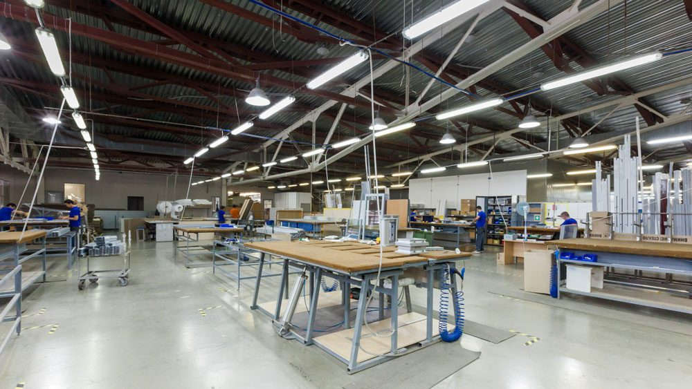 |
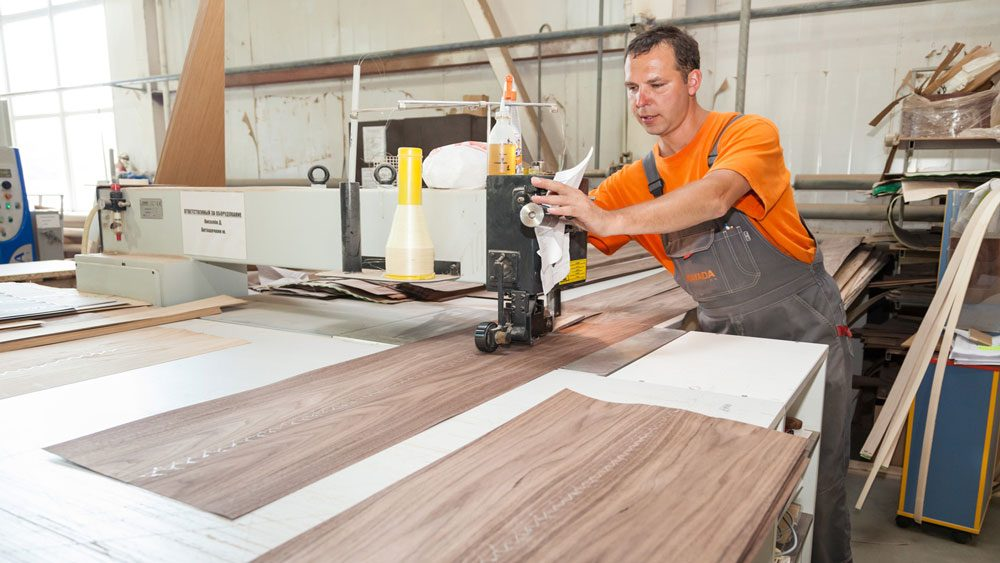 |
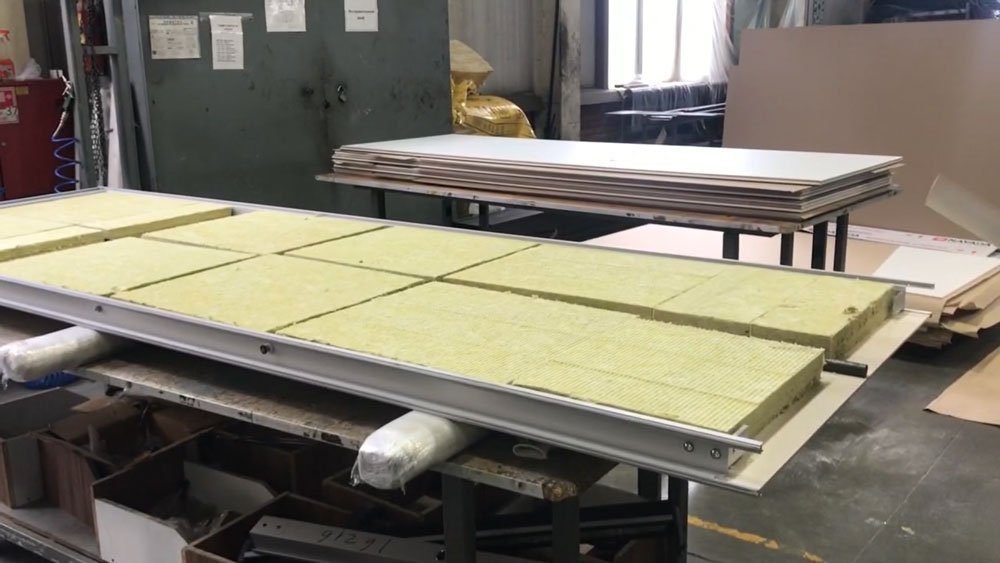 |


С различным заполнением секций раздвижных перегородок: ЛДСП, МДФ, пластик, шпон из ценных пород дерева, оклейка цветной пленкой, стекло магнезит с пленкой и т.д.
Высокотехнологичное производство SmartWall
Такой большой ассортимент видов перегородок и типов отделки возможен только при наличии современного, высокотехнологичного производства.
И такое производство у SmartWall есть. В ближнем Подмосковье, в Домодедовском районе располагаются цеха, в которых осуществляют реализацию всех производственных цепочек.
На территории производства SmartWall производится все работы, вплоть до отгрузки готового изделия и доставки его к Заказчику. Для последующего монтажа нашими рабочими в офисе или другом помещении, где есть необходимость зонировать пространство.
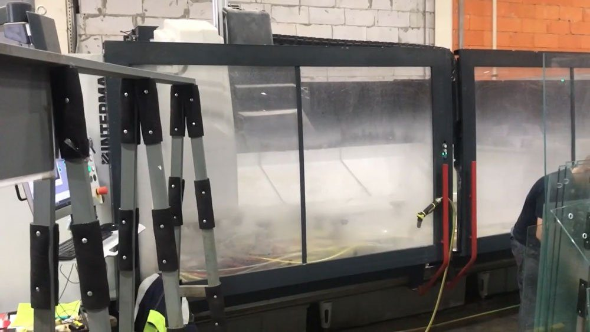 |
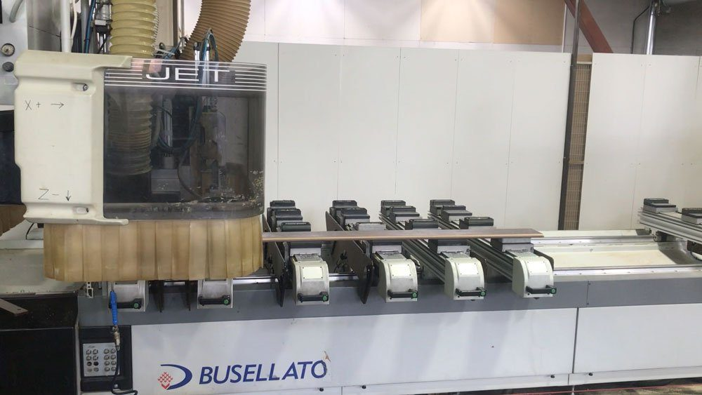 |
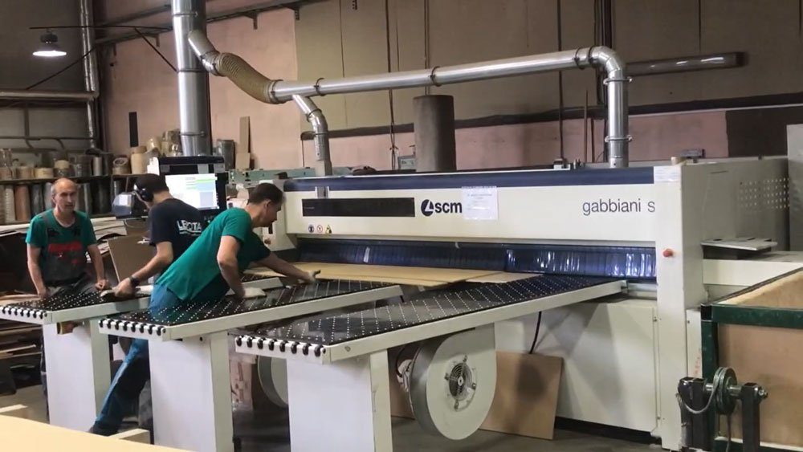 |


Для производства SmartWall использует современные высокотехнологичные итальянские и швейцарские станки с ЧПУ, позволяющие произвести работу максимально эффективно.
Контроль качества продукции осуществляется на каждом отрезке всей технологической цепочки производства и позволяет избегать брака.
Культура производства – тоже немаловажная часть вклада в общую систему качества на предприятии SmartWall.
Каждый рабочий, инженер, дизайнер, контролер – высококлассный специалист своего дела. Большая часть из них имеет рабочий стаж по специальности более 10 лет и работы непосредственно в SmartWall более 5 лет.
Отличительной частью SmartWall является наличие полного производственного цикла. Начиная от разработки концепции и дизайн проекта до монтажа готовой перегородки-трансформера у Заказчика.
А так же гарантийное и пост гарантийное обслуживание на протяжении всего срока эксплуатации изделия.
Такой подход позволяет компании держать одни из самых низких цен на складные перегородки на отечественном рынке.
Работа с различными материалами
Производственные мощности SmartWall позволяют работать как с алюминиевым профилем, так и со стеклом и материалом для заполнения секций.
То есть с четырьмя различными видами материалов – металлом, стеклом и деревом и пластиком.
SmartWall использует только качественные материалы и фурнитуру, проверенные временем и эксплуатацией, а потому раздвижные перегородки в нашем исполнении – выгодное приобретение.
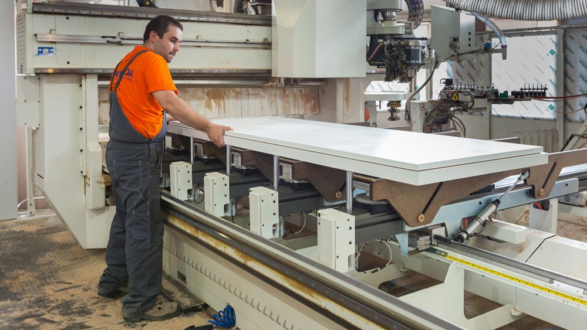 |
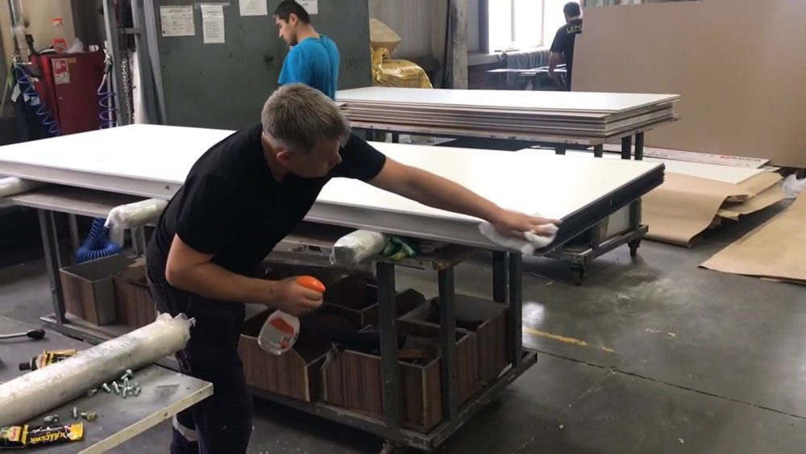 |
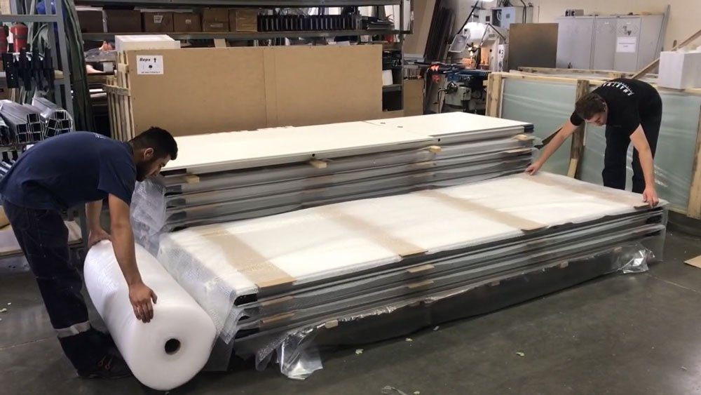 |


Все вышеописанное позволяет компании работать с максимальной гибкостью, и удовлетворять потребности как крупных коммерческих и государственных заказчиков, так и частных клиентов.
Для них возможность создать качественную раздвижную перегородку подходящую под интерьер премиум студии или загородного коттеджа крайне важная составляющая, при выборе исполнителя своего заказа.
Примеры работы SmartWall
SmartWall выполнило многочисленные проекты по монтажу под ключ раздвижных перегородок у своих Заказчиков. В этом разделе вы можете посмотреть наши работы выполненные для компаний, работающих в различных сферах деятельности.
Это офисы, торговые и бизнес-центры, гостиницы, спортивные сооружения, концертные залы, школы, детские сады, квартиры и многое другое.
Вы можете посмотреть фотографии наших работ и увидеть, как в каждом конкретном случае была решена задача зонирования совершенно различных по площади и планировке помещений.
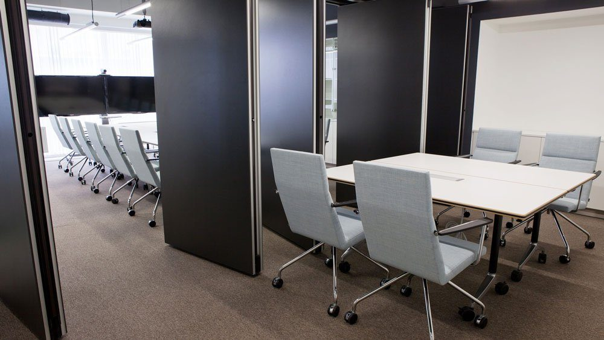 |
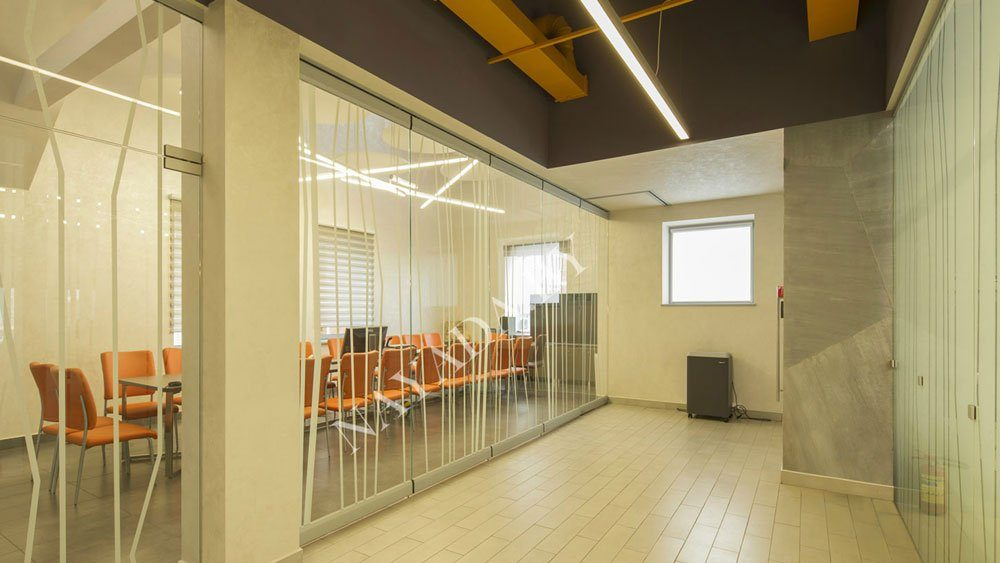 |
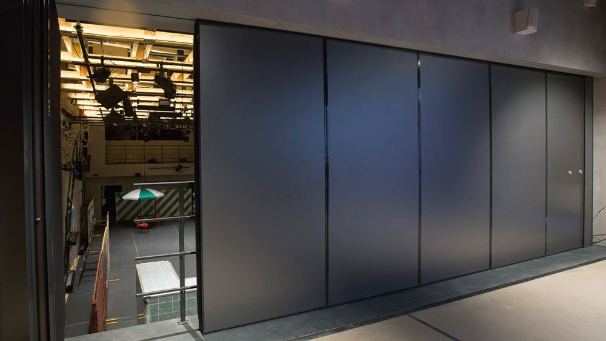 |


Для разделения помещений были использованы разные виды раздвижных перегородок с индивидуальным дизайном, подходящем конкретно для этих интерьеров.
Все они были выполнены у нас на производстве, и привезены для монтажа у Заказчика. Все красивые секции, двери, раздвижные стены – изготовлено на мощностях компании SmartWall.
Бесплатный замер
Оставьте заявку — замер бесплатно
Перезвоним, уточним задачу и подготовим расчёт. Можно прикрепить планировку или техническое задание.
+7 (499) 755-88-45